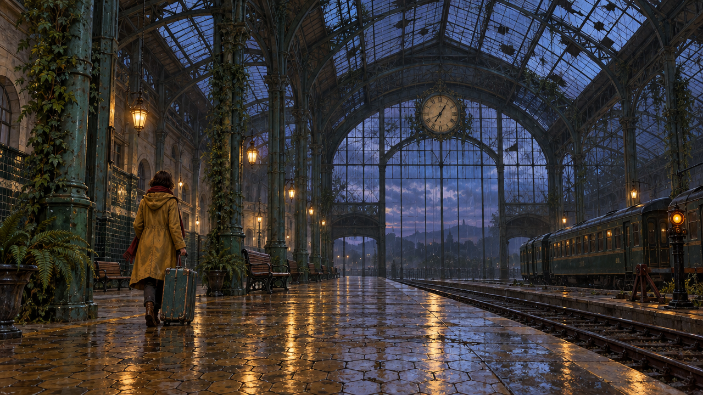
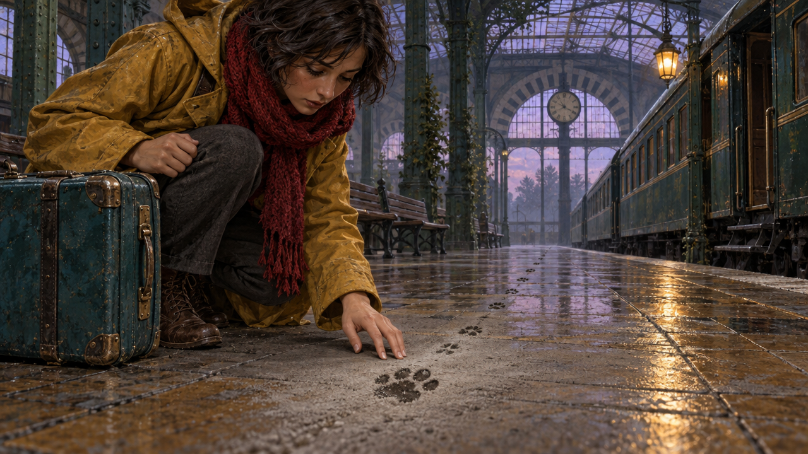
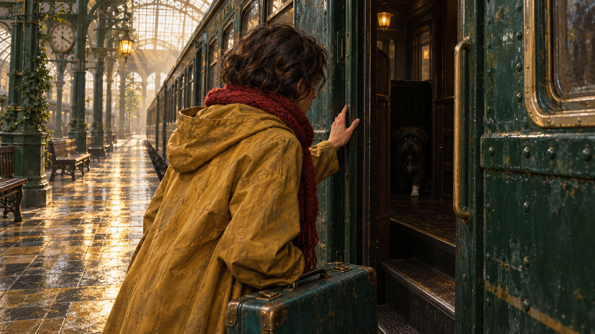
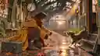

02 · ORIGINAL REMOTO NO PUBLICADO
03 · AÚN NO PRODUCIDO

04 · ORIGINAL REMOTO NO PUBLICADO

06 · AÚN NO PRODUCIDO
La llegada. Una huella. Alguien que todavía respira. Historia visual sin palabras, con cuadros aún pendientes de producción.



